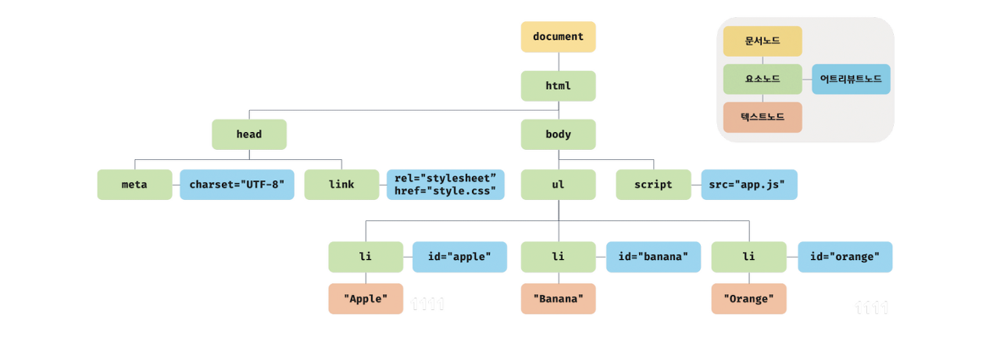

DOM(Document Object Model)은 HTML 문서의 계층적 구조와 정보를 표현하며 이를 제어할 수 있는 API, 즉 프로퍼티와 메서드를 제공하는 트리 자료구조다.
노드
HTML 요소는 HTML문서를 구성하는 개별적인 요소를 말한다. HTML 요소는 렌더링 엔진에 의해 파싱 후 DOM을 구성하는 요소 노드 객체로 변환된다.
HTML 요소 간에는 중첩 관계에 의해 계층적인 부모-자식 관계가 형성되고, 이 관계를 반영하여 노드 객체를 트리 자료구조로 구성한다. 이 노드 객체들로 구성된 트리 자료구조를 DOM(Document Object Model)이라 하고, DOM 트리라고 부르기도 한다.
다음 코드를 DOM으로 나타내면 그림과 같다.
<!DOCTYPE html>
<html>
<head>
<meta charset="UTF-8">
<link rel="stylesheet" href="style.css">
</head>
<body>
<ul>
<li id="apple">Apple</li>
<li id="banana">Banana</li>
<li id="orange">Orange</li>
</ul>
<script src="app.js"></script>
</body>
</html>

DOM은 노드 객체의 계층적 구조로 구성된다. 노드 객체는 총 12개의 타입이 있으며, 이 중 중요한 노드 타입은 다음 4가지다.
문서 노드(document node): DOM 트리 최상위에 존재하는 루트 노드로서 document 객체를 가리킨다. HTML 문서당 document 객체는 유일하다. 또한 document 객체는 DOM 트리의 루트 노드로 DOM 트리 노드들에 접근하기 위한 진입점이다.
요소 노드(element node): 요소 노드는 HTML 요소를 가리키는 객체다. 요소 노드는 HTML 요소 간의 중첩에 의해 부자 관계를 가지며, 이 부자 관계를 통해 정보를 구조화한다. 따라서 요소 노드는 문서의 구조를 표현한다고 할 수 있다.
어트리뷰트 노드(attribute node): HTML 요소의 어트리뷰트를 가리키는 객체다. 어트리뷰트 노드는 어트리뷰트가 지정된 HTML 요소의 요소 노드와 연결되어 있다. 어트리뷰트 노드에 접근하여 어트리뷰트를 참조하거나 변경하려면 먼저 요소 노드에 접근해야 한다.
텍스트 노드(text node): 텍스트 노드는 HTML 요소의 텍스트를 가리키는 객체다. 텍스트 노드는 요소 노드의 자식 노드이며, 자식 노드를 가질 수 없는 리프 노드다. 텍스트 노드는 DOM 트리의 최종단이다.
DOM을 구성하는 노드 객체는 자신의 구조와 정보를 제어할 수 있는 DOM API를 사용할 수 있다. 이 API를 통해서 노드 객체는 자신의 부모, 형제, 자식을 탐색할 수 있으며, 자신의 어트리뷰트와 텍스트를 조작할 수 있다.
요소 노드 취득
id를 이용한 요소 노드 취득
Document.prototype.getElementById 메서드는 인수로 전달한 id 어트리뷰트 값을 갖는 하난의 요소 노드를 탐색하여 반환한다. getElementById 메서드는 Document.prototype의 프로퍼티로 반드시 문서 노드인 document를 통해 호출한다.
1
2
3
4
5
6
7
8
9
10
11
12
13
14
15
16
<!DOCTYPE html>
<html>
<body>
<ul>
<li id="apple">Apple</li>
<li id="banana">Banana</li>
<li id="orange">Orange</li>
</ul>
<script>
const $elem = document.getElementById('banana');
$elem.style.color = 'red';
</script>
</body>
</html>
id 값은 HTML 문서 내에서 유일한 값이어야 하며, class 어트립트와는 달리 공백 문자로 구분하여 여러 개의 값을 가질 수 없다. 중복된 id 값을 갖는 요소가 있어도 에러가 발생하진 않지만, getElementById 메서드는 인수로 전달된 id 값을 갖는 첫 번째 요소 노드만 반환한다.
만약 인수로 전달된 id 값을 갖는 HTML 요소가 존재하지 않는 경우 getElementById 메서드는 null을 반환한다.
태그 이름을 이용한 요소 노드 취득
getElementsByTagName 메서드는 인수로 전달한 태그 이름을 갖는 모든 요소 노드들을 탐색하여 반환한다. getElementsByTagName 메서드는 여러 개의 요소 노드 객체를 갖는 DOM 컬렉션 객체인 HTMLCollection 객체를 반환한다.
1
2
3
4
5
6
7
8
9
10
11
12
13
14
15
16
<!DOCTYPE html>
<html>
<body>
<ul>
<li id="apple">Apple</li>
<li id="banana">Banana</li>
<li id="orange">Orange</li>
</ul>
</body>
<script>
const $elems = document.getElementsByTagName('li');
[...$elems].forEach(elem => { elem.style.color = 'red'; });
</script>
</html>
DOM 컬렉션 객체인 HTMLCollection 객체는 유사 배열 객체이면서 이터러블이다.
class를 이용한 요소 노드 취득
getElementsByClassName 메서드는 인수로 전달한 class 어트리뷰트 값을 갖는 모든 요소 노드들을 탐색하여 반환한다. getElementsByClassName 메서드는 여러 개의 요소 노드 객체를 갖는 DOM 컬렉션 객체인 HTMLCollection 객체를 반환한다.
1
2
3
4
5
6
7
8
9
10
11
12
13
14
15
16
17
<!DOCTYPE html>
<html>
<body>
<ul>
<li class="fruit apple">Apple</li>
<li class="fruit banana">Banana</li>
<li class="fruit orange">Orange</li>
</ul>
<script>
// class가 'fruit'인 요소 노드를 모두 탐색하여 HTMLCollection 객체에 담아 반환한다.
const $elem = document.getElementsByClassName('fruit');
[...$elems].forEach(elec => { elem.style.color = 'red'; });
</script>
</body>
</html>
만약 인수로 전달된 class 값을 갖는 요소가 없을 경우 getElementsByClassName 메서드는 빈 HTMLCollection 객체를 반환한다.
CSS 선택자를 이용한 요소 노드 취득
CSS 선택자는 스타일을 적용하고자 하는 HTML 요소를 특정할 때 사용하는 문법이다.
1
2
3
4
5
6
7
8
9
10
11
12
13
14
15
16
17
18
19
20
21
22
23
24
/* 전체 선택자: 모든 요소를 선택 */
* { ... }
/* 태그 선택자: 모든 p 태그 요소를 모두 선택 */
p { ... }
/* id 선택자: id 값이 'foo'인 요소를 모두 선택 */
#foo { ... }
/* class 선택자: class 값이 'foo'인 요소를 모두 선택 */
.foo { ... }
/* 어트리뷰트 선택자: input 요소 중에 type 어트리뷰트 값이 'text'인 요소를 모두 선택 */
input[type=text] { ... }
/* 후손 선택자: div 요소의 후손 요소 중 p 요소를 모두 선택 */
div p { ... }
/* 자식 선택자: div 요소의 자식 요소 중 p 요소를 모두 선택 */
div > p { ... }
/* 인접 형제 선택자: p 요소의 형제 요소 중에 p 요소 바로 뒤에 위치하는 ul 요소를 선택 */
p + ul { ... }
/* 일반 형제 선택자: p 요소의 형제 요소 중에 p 요소 뒤에 위치하는 ul 요소를 모두 선택 */
p ~ ul { ... }
/* 가상 클래스 선택자: hover 상태인 a 요소를 모두 선택 */
a: hover { ... }
/* 가상 요소 선택자: p 요소의 콘텐츠의 앞에 위치하는 공간을 선택, 일반적으로 content 프로퍼티와 함께 사용함 */
p::before { ... }
querySelector 메서드는 인수로 전달한 CSS 선택자를 만족시키는 하나의 요소 노드를 탐색하여 반환한다.
인수로 전달한 CSS 선택자를 만족시키는 요소 노드가 여러 개인 경우 첫 번째 요소 노드만 반환한다.
인수로 전달된 CSS 선택자를 만족시키는 요소 노드가 존재하지 않는 경우 null을 반환한다.
인수로 전달한 CSS 선택자가 문법에 맞지 않는 경우 DOMException 에러가 발생한다.
querySelectorAll 메서드는 인수로 전달한 CSS 선택자를 만족시키는 모든 요소 노드를 탐색하여 반환한다. querySelectorAll 메서드는 DOM 컬렉션 객체인 NodeList 객체를 반환하며, NodeList 객체는 유사 배열 객체이면서 이터러블이다.
인수로 전달된 CSS 선택자를 만족시키는 요소가 존재하지 않는 경우 빈 NodeList 객체를 반환한다.
인수로 전달된 CSS 선택자가 문법에 맞지 않는 경우 DOMException 에러가 발생한다.
CSS 선택자 문법 메서드는 getElementById, getElementsBy* 메서드보다 느린 것으로 알려져 있다. 하지만 CSS 선택자 문법은 좀 더 구체적인 조건으로 요소 노드를 취득할 수 있고 일관된 방식으로 요소 노드를 취득할 수 있다는 장점이 있다. **따라서 id 어트리뷰트가 있는 요소 노드를 취득할 경우에는 getElementById 메서드를 사용하고 그 외의 경우는 querySelector, querySelectorAll 메서드를 사용하는 것을 권장한다.